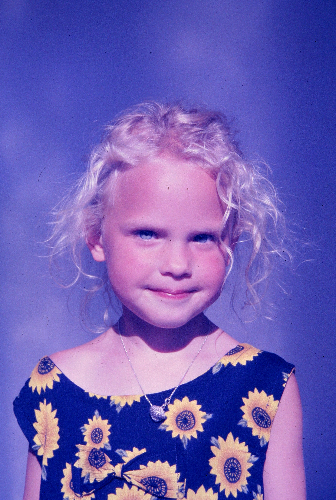

Als wir nach Marburg kamen, war Jan vier Jahre alt. Wir hatten uns eigentlich noch ein zweites Kind gewünscht, aber zunächst wurde nichts daraus. Umso größer war die Freude, als Hilde eines Tages merkte, dass sie schwanger war. In einer Zeit, in der wir uns in Marburg nicht wohlfühlten und vieles schiefgelaufen war, war diese Schwangerschaft endlich wieder etwas Positives.
Ich arbeitete damals als Assistenzarzt auf der pädiatrischen Intensivstation und war unter anderem für die Betreuung und Reanimation von Früh- und Neugeborenen zuständig. Dadurch wusste ich allerdings auch ziemlich genau, was alles passieren konnte.
In der elften Schwangerschaftswoche ging Hilde zur Vorsorgeuntersuchung in die Frauenklinik. Ich erinnere mich noch genau an den Augenblick, als ich sie anschließend im Treppenhaus traf. Sie stand dort völlig unglücklich und weinte. „Ich habe schon Wehen“, sagte sie. Ich wusste gleich, was das bedeutet. Wehen in der frühen Schwangerschaft sind ein Alarmzeichen. Manchmal sind sie Ausdruck dafür, dass mit dem Kind etwas nicht stimmt und der Körper die Schwangerschaft von selbst beendet. Im Ultraschall konnte man zwar keine Fehlbildung erkennen, aber damit war natürlich längst nicht alles ausgeschlossen.
Nach allem, was bereits in Marburg passiert war, traf uns diese Nachricht besonders hart. Wir standen im Treppenhaus der Frauenklinik und wussten nicht, wie es weitergehen würde. Irgendwann sagte ich zu Hilde: „Wenn es mit dem Kind nichts wird, fahren wir nach Thailand und gönnen uns einen schönen Urlaub in der Sonne.“ Viel mehr fiel mir in diesem Moment nicht ein.
Die Schwangerschaft ging zunächst weiter. Allerdings konnte Hilde kaum noch etwas tun, ohne dass die Wehen wieder einsetzten. Sobald sie sich bewegte oder körperlich anstrengte, wurde es schlimmer. Mit Wehenhemmern ließ sich die Situation eine Zeit lang kontrollieren, aber schließlich meinte ihr betreuende Oberarzt Prof. Peter Schmidt-Rohde, sie müsse stationär aufgenommen werden.
Von da an lag Hilde in der Frauenklinik. Sie durfte nicht mehr aufstehen, auch nicht zur Toilette. Zur Vorbeugung gegen Thrombosen wurden ihre Beine bandagiert, und sie erhielt über Monate große Mengen an Wehenhemmern und Valium.
Für Hilde war das eine entsetzliche Zeit. Tag für Tag lag sie im Bett und wusste nicht, ob die Schwangerschaft noch einen weiteren Tag halten würde. Zu Hause war Jan, der ebenfalls betreut werden musste. Und wir hatten niemanden sonst. Ich arbeitete in der Klinik und versuchte, zwischen Intensivstation, Frauenklinik und Wohnung irgendwie alles zusammenzuhalten.
In der 29. Schwangerschaftswoche wurde es plötzlich dramatisch. Hilde bekam Schüttelfrost und hohes Fieber. Sie hatte eine Blutvergiftung. Es sah so aus, als müsse die Schwangerschaft nun beendet werden. Ein Kind in diesem Schwangerschaftsalter war damals keineswegs auf der sicheren Seite. Es wurden Antibiotika gegeben, und wider Erwarten beruhigte sich die Situation noch einmal.
Die Schwangerschaft konnte schließlich bis zur 32. Woche fortgesetzt werden. Dann entschied man sich nach den langen Monaten der Wehenhemmung, das Kind per Kaiserschnitt zu holen. Den Namen hatten wir längst ausgesucht: Kaja.
Für mich ergab sich eine schlimme Situation. Als Assistenzarzt der Intensivstation wäre ich normalerweise für die Erstversorgung eines solchen Frühgeborenen zuständig gewesen. Meine eigene Tochter wollte ich jedoch nicht wiederbeleben müssen. Ich sprach deshalb mit Andreas Leonhard und Jürgen Magsaam, die damals oberärztlich für die Neonatologie verantwortlich waren.
Ich sagte ihnen, dass einer von ihnen die Erstversorgung übernehmen müsse. Ich würde mich in der Nähe aufhalten. Wenn ich das Kind schreien hörte, wusste ich, dass es zunächst einmal lebte und atmete. Wenn es nicht schrie, sollten sie sich darum kümmern, bevor ich dazukam.
An diesem Tag hatte Andreas Leonhard Dienst und erklärte sich bereit, Kaja zu versorgen. Während des Kaiserschnitts saß ich um die Ecke in der Küche und wartete. Ich war angespannt wie selten zuvor. Dann hörte ich ein kleines, klägliches Schreien. Für mich war es das schönste Geräusch der Welt. Meine Tochter lebte. Sie atmete. Sie war nicht schwer krank. Erst danach ging ich zur Erstversorgung. Kaja brauchte etwas Sauerstoff über eine Maske, stabilisierte sich aber rasch.
Ganz einfach waren die ersten Tage trotzdem nicht. Durch die Medikamente, die Hilde während der Schwangerschaft erhalten hatte, war auch Kaja mit Valium belastet. Sie war schläfrig und konnte zunächst kaum trinken. Jeder einzelne Milliliter, den sie schaffte, wurde von uns als großer Fortschritt gefeiert.
Hilde ging es zunächst nicht viel besser. Auch sie hatte über Monate Valium erhalten. Nach der Geburt wurde es plötzlich abgesetzt. Das war ein schwerer Fehler. Sie geriet in einen Entzug und war überzeugt, sie müsse sterben. Aus der Frauenklinik ließ sie mich anrufen und sagte, sie wolle mich noch einmal sehen. Als ich zu ihr kam, hatte sie sich völlig aufgegeben. Ich erklärte ihr, dass sie nicht sterben werde. Man habe lediglich das Valium zu abrupt abgesetzt und müsse es langsam ausschleichen. Genau so war es. Nach einiger Zeit ging es ihr wieder besser.
Auch Kaja machte Fortschritte. Hilde konnte schließlich nach Hause, während Kaja noch eine Weile in der Kinderklinik bleiben musste. Ich besuchte sie jeden Tag und legte ihr gelegentlich selbst einen venösen Zugang, weil ich darin damals viel Erfahrung hatte. Eines Morgens hatte ich Nachtdienst. Kaja konnte inzwischen trinken, ihre Körpertemperatur selbst halten und brauchte keine besondere Behandlung mehr. Ich konnte sie mit nach Hause nehmen.
Also stand ich morgens nach meinem Nachtdienst plötzlich mit diesem winzigen Kind in unserer Wohnung in der Lutherstraße. Kaja wog gerade einmal 2400 Gramm. Als Hilde sie sah, schlug sie zunächst die Hände über dem Kopf zusammen. Nach allem, was hinter ihr lag, traute sie sich kaum zu, mit diesem kleinen Kind allein umzugehen.
Dabei hatte die Schwangerschaft auch bei ihr deutliche Spuren hinterlassen. Fünf Monate Bettruhe, Wehenhemmer und Valium hatten sie stark abgemagert. Sie hatte einen großen Teil ihrer Muskulatur verloren und konnte nach der Entlassung kaum noch laufen. Tatsächlich musste sie das Gehen erst wieder lernen. Aber auch das spielte sich mit der Zeit ein.
Kaja entwickelte sich prächtig und ist gesund. Mittlerweile studiert sie Psychologie an der Freien Universität Berlin.
Wenn Hilde heute auf diese fünf Monate zurückblickt, sagt sie manchmal, dass sie für diese Schwangerschaft einen hohen Preis bezahlt habe. Im nächsten Satz fügt sie allerdings immer hinzu, dass sie ihn jederzeit wieder bezahlen würde. Denn am Ende stand für sie das größte Geschenk, das sie sich vorstellen konnte – unsere wunderbare Kaja.

Die Geburt unserer Tochter war wahrscheinlich das Schönste, was wir aus Marburg mitgenommen haben. Nach fünf Monaten voller Hoffnung, Angst und Ungewissheit durften wir sie schließlich mit nach Hause nehmen. Danach wurde vieles leichter – auch wenn unsere Zeit in Marburg insgesamt noch längst nicht zu Ende war.